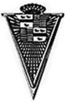
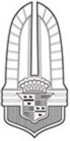
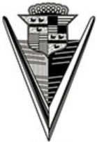
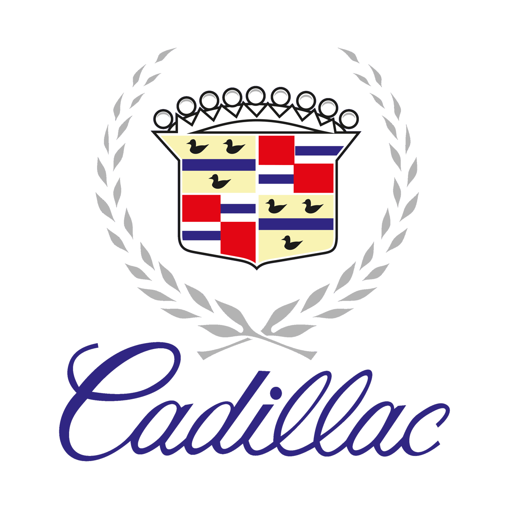

캐딜락 Cadillac
캐딜락는 자동차 산업 분야의 브랜드입니다.
최종 업데이트
캐딜락은 어떤 브랜드인가
캐딜락는 자동차 산업 분야의 브랜드입니다.
캐딜락은 어떻게 봐야 할까
캐딜락은 1902년 헨리 릴런드가 디트로이트에서 설립했고 1909년 제너럴모터스에 인수되어 GM 최상위 럭셔리 사업부로 자리 잡았다. 초기에는 부품 호환성과 정밀 제조에 기반한 품질로 미국 럭셔리 시장 정상에 올랐으나, 2000년대 이후 메르세데스벤츠·BMW·아우디 등 독일 프리미엄에 플래그십 세단 영역과 브랜드 충성도에서 추월당했다.
이를 만회하려 캐딜락은 2020년대 들어 전동화 SUV를 전 가격대에 배치하는 공격적 전기차 전환 전략을 택했고, 2026년형 리릭이 독일 매체의 올해의 럭셔리차로 선정되는 등 제품력에서 격차를 좁혔다는 평가를 받았다. 독일 브랜드가 세단 중심 정통 주행 감성을 내세우는 반면 캐딜락은 대형 SUV와 풀사이즈 럭셔리, 거대한 곡면 디스플레이 같은 기술·존재감으로 차별화한다.
한국 시장에서는 1억원 이상 고가 모델 위주로 라인업을 운영하면서 연간 판매가 1,000대 미만에 머무는 비주류 수입차로 분류된다.
캐딜락은 어떻게 시작되고 성장했나
헨리 릴런드가 1902년에 설립한 미국의 명품 자동차 브랜드로 세단, 크로스오버, 쿠페, SUV 등을 제조 · 판매함.
캐딜락의 브랜드 아이덴티티는 무엇인가
캐딜락의 문장(crest)은 1701년 디트로이트를 세운 프랑스 탐험가 앙투안 드 라 모트 카디약 가문의 문장(紋章, coat of arms)에서 유래한다. 자동차에는 1900년대 초인 1905년 무렵부터 쓰였고 이듬해인 1906년 상표로 등록됐다.
전통 문장에는 부리와 발이 없는 채로 영원히 날아오르는 모습으로 양식화된 작은 새 메를레트(merlette)와 위쪽의 관(crown)이 핵심 요소로 자리했으며, 방패는 금·적·청·흑 계열로 사등분된 다색 구성을 오래 유지했다. 오랜 기간 문장은 월계관(laurel wreath)에 둘러싸인 형태로 쓰였으나, 2014년 개편에서 월계관을 떼어내 방패만 남기고 비례를 키워 단순화했다.
이어 2021년 전기차 라인 도입에 맞춘 개편에서는 사등분 색상과 새(메를레트)를 들어내고 평면화한 흑백 단색 형태로 바꿔, 화려한 다색 헤럴드리에서 미니멀한 모노크롬 상징으로 전환했다.
캐딜락의 대표 제품과 서비스는 무엇인가
라인업은 순수 전기 SUV 중심으로 재편됐다. 중형 전기 SUV 리릭은 후륜 단일 모터 기준 515마력 사양과 약 326마일 주행거리를 갖췄고, 한국에는 2024년 1억696만원에 출시돼 사전계약 첫 주 초도물량 180대를 완판했다.
풀사이즈 전기 SUV 에스컬레이드 IQ는 최고 750마력과 약 460마일 주행거리, 55인치 곡면 디스플레이를 탑재한다. 가솔린 모델인 더 뉴 에스컬레이드는 6.2L V8로 426마력을 내며 2025년 4월 한국에 1억6,607만원에 출시됐다.
보급형 전기 SUV 옵틱과 3열 패밀리 전기 SUV 비스틱이 가격대별로 배치돼 메르세데스벤츠·BMW의 SUV 군과 직접 경쟁한다.
캐딜락 연혁 — 주요 사건은 언제였나
캐딜락 로고는 어떻게 변해왔나

BI/CI 아카이브대표 브랜드 마크
BI/CI 아카이브 1보관 이미지 1
BI/CI 아카이브 2보관 이미지 2
BI/CI 아카이브 3보관 이미지 3자주 묻는 질문
캐딜락는 어떤 산업의 브랜드인가요?
캐딜락는 모빌리티 분야의 브랜드입니다.
캐딜락의 브랜드 아이덴티티는 무엇인가요?
캐딜락의 문장(crest)은 1701년 디트로이트를 세운 프랑스 탐험가 앙투안 드 라 모트 카디약 가문의 문장(紋章, coat of arms)에서 유래한다.
캐딜락의 대표 제품은 무엇인가요?
라인업은 순수 전기 SUV 중심으로 재편됐다.
캐딜락는 어느 기업이 소유하고 있나요?
공식 웹사이트: https://www.cadillaceurope.com/; 국가: 미국; 본사: 디트로이트; 상위/소유 조직: 제너럴 모터스; 소유자: 제너럴 모터스; 산업: 자동차 산업
출처와 검증
브랜드명은 한글과 원어를 함께 표기하되 데이터에 없는 표기는 만들지 않습니다. 기원 국가·설립연도는 검수된 정의문에서 확인된 값을 우선하고, 없을 때만 공식 웹사이트 URL이 일치하는 위키데이터 개체의 값을 씁니다.